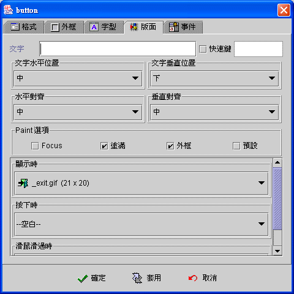
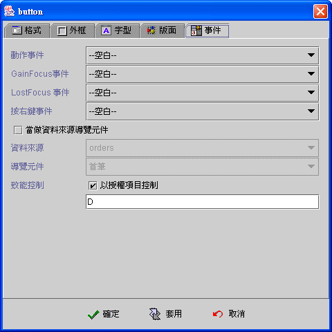

|

按鈕元件 (Button component)

共同屬性 (common
properties)
版面 (face)
事件 (event)
運算式屬性存取
(formula get/set properties)
按鈕元件
(Button component)
提供使用者啟動事件的介面，亦可設定為操作資料來源導覽
(data source navigator) 的按鈕，此時按鈕元件會隨時以致能
(enabled) 或失效 (disabled) 反應資料來源的狀態。如果採用 jLIVE™
授權機制，按鈕元件在連結動作事件為開啟視窗事件 (open
form) 、執行印表作業事件 (report job) 、查詢資料來源事件
(query data source)或當作瀏覽元件 (act as data source navigator)
時，皆會根據使用者是否擁有相關授權項目 (IUDQP)，而使按鈕元件致能
(enabled) 或失效 (disabled)。
版面 (face)
-
文字 (text)：按鈕元件的說明文字。
-
易記鍵 (mnemonic)：定義易記鍵，先核選使用，再按住
"ALT" 鍵，接著按下所要的易記鍵。應用程式執行時，使用者按住
"ALT" 鍵+易記鍵，等於以滑鼠按下 (clicked) 按鈕元件
(button)。
-
文字水平位置 (text horizontal position)：文字與按鈕圖示
(icon) 的水平相對位置。
-
文字垂直位置 (text vertical position)：文字與按鈕圖示
(icon) 的水平相對位置為中 (center) 時， 文字與按鈕圖示 (icon)
的垂直相對位置。
-
水平對齊 (horizontal align)：文字與按鈕圖示水平位置。
-
垂直對齊 (vertical align)：文字與按鈕圖示垂直位置。
-
Paint 選項：以下屬性必須元件的屬性為不透明
(opaque) 時才有作用。
-
Focus (paint focus)：當元件擁有
Focus 時 (focus owner)，在文字上顯示 Focus 框線。
-
塗滿 (paint fill)：當使用者以滑鼠或按鍵按下按鈕元件時，元件以預設塗滿顏色為背景顏色，滑鼠放開
(released) 時，恢復為原設定背景顏色。
-
外框 (paint border)：顯示按鈕外框。
-
預設 (default button)：以預設按鈕
(default button) 的外觀呈現。
-
顯示時 (display icon)：按鈕元件顯示圖示
(icon)。
-
按下時 (pressed icon)：按鈕元件按下時顯示圖示
(icon)。
-
滑鼠滑過時 (roll over icon)：當滑鼠移到按鈕元件時顯示圖示
(icon)。

▲Top
事件 (event)
-
動作事件 (action event)：使用者按下
(clicked) 按鈕元件時，即引發事件 (fire event)。
-
Gain
Focus 事件：當 Focus 移入按鈕元件時，即引發事件 。
-
Lost
Focus 事件：當 Focus 移出按鈕元件時，即引發事件 。
-
按右鍵事件 (right clicked event)：按滑鼠的右鍵時，即引發事件。
-
當作資料來源導覽元件 (act as data
source navigator button)：
-
致能控制 (enable
control)：以授權項目控制。以 jLIVE Builder™ 授權管理或自行授權管理，視窗啟始時 按鈕元件 (Button
component) 會查驗 SysHash 中是否含有授權項目，並根據授權項目是否存在，致能或失效(enable or disable) 按鈕元件
(Button component) 。

▲Top
運算式屬性存取
(formula get/set properties)
SetProp("元件名稱",
"屬性", 值) ：屬性設定。
SetProp("元件名稱",
"屬性", 值1, 值2)：屬性設定。
GetProp("元件名稱",
"屬性")：屬性讀取。
| Set
Properties |
| 屬性
(Properties) |
值1
(Value 1) |
值2
(Value 2) |
說明 (Descriptions) |
| enabled |
1 致能，0 失效 |
|
致能與失效。 |
| setfocus |
1 設定 Focus |
|
設定 Focus。 |
| visible |
1 顯示，0 隱藏 |
|
顯示與隱藏。 |
| repaint |
1 重繪，2
立即重繪 |
|
重繪。 |
| text |
文字串 |
|
設定按鈕元件說明文字
(Face text)。 |
| bg |
RGB(red, green, blue) |
|
背景顏色。值1 必須以Formula 的 RGB() 運算式給值。
|
| fg |
RGB(red, green, blue) |
|
前景顏色。值1 必須以Formula 的 RGB() 運算式給值。
|
| x |
正整數值 |
|
左座標位置。 |
| y |
正整數值 |
|
上座標位置。 |
| w |
正整數值 |
|
元件寬度。 |
| h |
正整數值 |
|
元件高度。 |
| xy |
正整數值 |
正整數值 |
左(Value1) 上(Value2) 座標位置。 |
| wh |
正整數值 |
正整數值 |
元件寬(Value1) 高(value2)度。 |
| Get
Properties |
| 屬性
(Properties) |
傳回值
(Return value) |
說明 (Descriptions) |
| isenabled |
1 致能，0 失效 |
致能與失效。 |
| isvisible |
1 顯示，0 隱藏 |
顯示與隱藏。 |
| text |
文字串 |
按鈕元件的說明文字
(Face text)。 |
| x |
整數值 |
左座標位置。 |
| y |
整數值 |
上座標位置。 |
| w |
整數值 |
元件寬度。 |
| h |
整數值 |
元件高度。 |
▲Top
Copyright © 2001~
2004 Probe Technology . All Rights Reserved.
Questions, comments,
and suggestions to Service@probe.com.tw
|